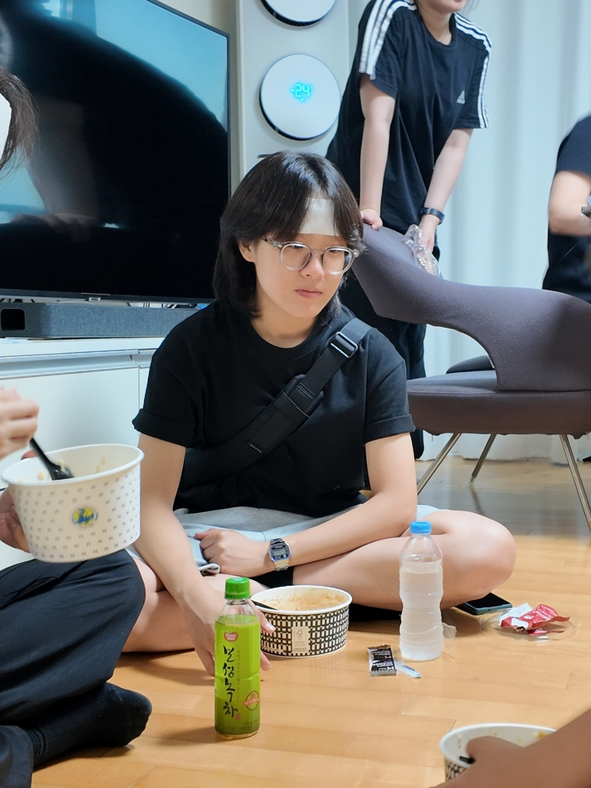

DIRECTOR'S IDENTITY

저 영화감독 이아인은 사람의 미묘한 감정을 깊이 있게 파고드는 연출가입니다. "모든 이야기와 사람은 각자만의 스토리와 장단점을 지닌다"는 굳건한 가치관을 바탕으로, 선악의 평면성을 넘어선 입체적이고 살아 숨 쉬는 인간상을 스크린 위에 구축하겠습니다.
세상을 남들보다 더욱 진지하고 다양한 시각으로 바라봅니다. 가장 냉소적인 사람의 마음마저 움직일 수 있는 밀도 높은 서사와 감정선을 설계하여, 관객이 작품 속 인물과 깊이 교감할 수 있도록 유도합니다.
인생을 살며 느끼게 될 다채로운 감정을 강렬하고 진중한 색감으로 화면에 담아냅니다. 관객이 스토리에 편안하게 몰입할 수 있도록, 화면의 레이아웃과 비주얼 타이포그래피의 밸런스를 끊임없이 연구합니다.
“세상에서 가장 감정을 느끼지 못하는 사람도 눈물을 흘리게 만드는 작품.” 이 궁극적인 목표를 향해, 현장의 치열함과 연출 미학의 고도화를 멈추지 않는 대체 불가능한 연출가로 나아가고 있습니다.
FILM DIRECTOR IAIN LEE